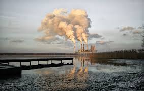
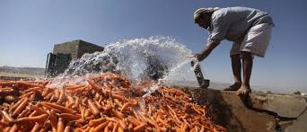

WHAT IS WATER SCARCITY? Water scarcity, both natural and of human origin, is the lack of sufficient available water resources to meet the demands within a region. Water is unequally distributed over time and space. Much of it is wasted, polluted and unsustainably managed. There is no global water scarcity as such, but a number of places and regions are chronically short of water because its use at the global level has increased more than twice as fast as the population over the last century. Pressure on water resources is increasing in several parts of the world, especially in China, India, Pakistan, in the Middle East and many countries and regions of Africa.
WATER SCARCITY EFFECTS 1.Hunger, poverty and education Apart from dehydration due to the obvious lack of drinking water, hunger is one the most serious effect of water scarcity. Why? Water shortages have a direct impact on crops and livestock, which can lead to food shortages and eventually starvation. As well, because of water shortages some people cannot shower, wash their clothes or clean their homes properly. 2.Sanitation issues and diseases Water scarcity generates sanitation problems by forcing people to drink unsafe water. In fact, when water is scarce people tend to store it at home, which increases the risk of domestic water contamination and creates breeding grounds for mosquitoes, which transmit dengue and malaria. Lack of water cause other diseases such as trachoma (an eye infection that can cause blindness), plague and typhus. 3.Conflicts Having access to water has become a powerful global economic issue that could become one of the main causes of international tension. Local conflicts - sometimes resulting in warfare - are triggered over scarce water resources. With the burgeoning global population and growing needs, these tensions could multiply in the future. 4.Biodiversity loss Water scarcity has different negative impacts on rivers, lakes, and other freshwater resources. It harms the environment in several ways including increased salinity, nutrient pollution, and the loss of floodplains and wetlands. Ecosystems and biodiversity (e.g. freshwater fish) are threatened by the scarcity of water resources.
WATER SCARCITY CAUSES   Some of the major reasons for water scarcity are: Inefficient use of water for agriculture. India is among the top growers of agricultural produce in the world and therefore the consumption of water for irrigation is amongst the highest. Traditional techniques of irrigation causes maximum water loss due to evaporation, drainage, percolation, water conveyance, and excess use of groundwater. As more areas come under traditional irrigation techniques, the stress for water available for other purposes will continue. The solution lies in extensive use of micro-irrigation techniques such as drip and sprinkler irrigation. Reduction in traditional water recharging areas. Rapid construction is ignoring traditional water bodies that have also acted as ground water recharging mechanism. We need to urgently revive traditional aquifers while implementing new ones. Sewage and wastewater drainage into traditional water bodies. Government intervention at the source is urgently required if this problem is to be tackled. Release of chemicals and effluents into rivers, streams and ponds. Strict monitoring and implementation of laws by the government, NGOs and social activists is required. Lack of on-time de-silting operations in large water bodies that can enhance water storage capacity during monsoon. It is surprising that the governments at state levels has not taken this up on priority as an annual practice. This act alone can significantly add to the water storage levels. Lack of efficient water management and distribution of water between urban consumers, the agriculture sector and industry. The government needs to enhance its investment in technology and include all stakeholders at the planning level to ensure optimization of existing resources.
WATER SCARCITY PREVENTION 1.Sustainable water management Improving water infrastructure must be a priority, as water conservation and efficiency are key components of sustainable water management. Solar desalination and smart irrigation systems are great examples of clean technology for water efficiency and control. That obviously applies even more to the agriculture and farming sector - the largest consumer of water. 2.Reclaimed water Rainwater harvesting and recycled wastewater also allow to reduce scarcity and ease pressures on groundwater and other natural water bodies. Groundwater recharge, that allows water moving from surface water to groundwater, is a well-known process to prevent water scarcity. Water is the most critical resource issue of our lifetime and our childrens lifetime. The health of our waters is the principal measure of how we live on the land.
WATER SCARCITY SOLUTION Education: There are plenty of opportunities out there that people can use in order to learn more about the world around them. By educating those who are not dealing with water scarcity, they can be in a position to help. Those who are dealing with it can get educated on how they can prevent the problem from becoming even worse in the future. Recycle Water: There are plenty of technologies out there that allow you to recycle rainwater and other water that you may be using in your home. Consider learning about how you can recycle water. Not only does it help to prevent scarcity, but it can save you some money as well. Advance Technology Related to Water Conservation: There has been a lot of work in the world of water conservation, but there is also a lot that needs to be done in order to ensure that the rest of the world is able to conserve water. Putting money and effort into conservation could be life saving. Improve Practices Related to Farming: Farming and irrigation are often a huge culprit when it comes to water scarcity. Because of that, we need to improve practices so that we don’t use as much water and those who are using water are using it to its fullest potential. Technology also needs to advance in this manner. Improve Sewage Systems: Clean drinking water starts with a good sewage system. Without proper sanitation, the water in an area becomes ridden with disease and any number of other problems. By improving the sewage systems in these areas, we can prevent water scarcity from becoming any worse. Support Clean Water Initiatives: There are organizations located all over the world that are looking to bring clean water to areas that don’t have it. Consider donating to these organizations, either with your time, your skills, or your finances (whichever you can afford to give to them).